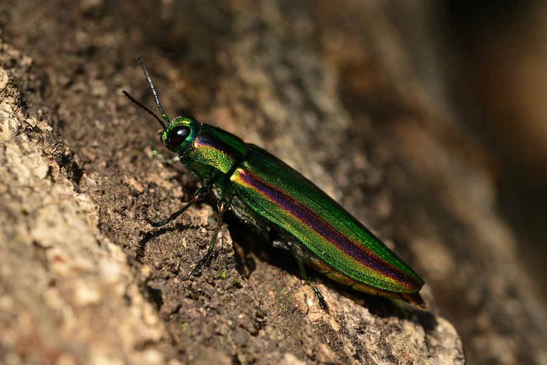

昆虫 · 动物界
五色吉丁 Chrysochroa fulgidissima

鞘翅泛金属彩虹光泽的吉丁虫，日本称玉虫，其鞘翅曾被用于装饰古代家具，幼虫蛀食枯木，是著名的观赏昆虫。
- 分类
- 门节肢动物门纲昆虫纲目鞘翅目科吉丁虫科属吉丁属
- 栖息环境
- 阔叶林与杂木林，成虫在树干和花上活动
- 地理分布
- 日本、朝鲜半岛和中国部分地区
- 保护级别
- 暂无评估
物种志
五色吉丁成虫体长约 3.5–4 cm，身体狭长，鞘翅表面有纵向的金属光泽条纹，在光线下呈现绿、蓝、紫、红等彩虹般的颜色，因此日本称之为玉虫；头部和胸部呈金属绿色，触角短。
幼虫在枯死的榉树、栎树等树干中蛀食，取食木质，幼虫期可达数年；成虫在夏季出现，喜欢停在树干和花上，取食花粉和嫩叶。五色吉丁分布于日本、朝鲜半岛和中国部分地区，是东亚著名的观赏甲虫。在日本，它的鞘翅因色泽艳丽而被用于装饰古代的玉虫厨子等佛教家具，被视为珍贵的装饰材料，也因此长久受到人们的关注和采捕。它的幼虫依赖枯木，保留老树和枯立木对其种群十分重要。
形态与习性
- 食性幼虫蛀食枯木；成虫取食花粉和嫩叶
- 体长约 3.5–4 cm
- 色彩鞘翅有金属光泽，呈绿、蓝、紫、红等彩虹色
- 生活史幼虫在枯木中生活数年，夏季成虫羽化
- 文化日本用其鞘翅装饰古代家具，称玉虫
- 分布日本、朝鲜半岛和中国部分地区
趣味知识
- 五色吉丁的鞘翅会随光线角度变色，像彩虹一样绚丽。
- 日本古代的玉虫厨子，就是用它的鞘翅装饰的。
- 幼虫蛀食枯木，因此保留枯立木对它的生存很重要。